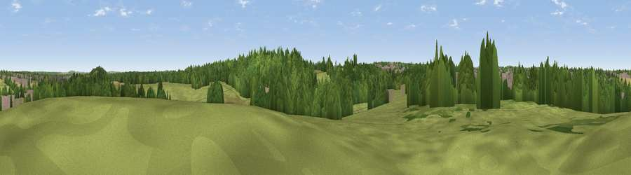

Viewpoint near Clipstone
#44276 in England · top 95% of its area beats it · near Clipstone · access?Where it is
The exact computed spot (SK 57475 61475). Click the marker for map links.
Public access: no public right of way or access land is recorded at this exact spot — it may be on private land. Computed from Natural England's CRoW access layer and OpenStreetMap rights of way — not the legal definitive map. Always verify locally.
The view, rendered

A 360° render of this exact spot computed from the terrain model, tree cover and land cover — summer colours, afternoon light, calibrated against photographs of famous viewpoints. Real trees, hedges and buildings will differ in detail.
The panorama
Grey silhouette: terrain skyline in each direction (720 bearings, Earth curvature and refraction included). Dashed green: skyline with trees (+15 m) and buildings (+8 m) as obstacles. Blue strip: how far the ground is visible on each bearing.
Where the view opens
Wedge length = distance to the farthest visible ground on that bearing (vegetation-aware). Rings at 10, 25 and 50 km.
What fills the view
41% woodland · 37% grassland · 17% built-up · 5% cropland
Angular shares of the visible panorama (visual magnitude), not map area. Landscape diversity 0.52 (0–1 Shannon).
Key numbers
More beautiful places nearby
The staircase of upgrades: each row has a higher view potential than everything closer. Driving times are estimates from straight-line distance, calibrated against real road routing — check an actual route before setting out.
| Place | Direction | Drive | Score |
|---|---|---|---|
| Viewpoint near Clipstone | SSE · 1 km | ~3 min | 41.3 |
| Viewpoint near Blidworth | S · 6 km | ~13 min | 42.6 |
| Viewpoint near Blidworth | SSE · 6 km | ~13 min | 46.1 |
| Viewpoint near Meden Vale | N · 9 km | ~17 min | 65.2 |
| Burstheart Hill [Thoresby Colliery] | NE · 9 km | ~17 min | 69.3 |
| Crich Stand | WSW · 24 km | ~39 min | 73.0 |
| Alport Height | WSW · 29 km | ~45 min | 73.9 |
| Tissington Hill | WSW · 43 km | ~63 min | 75.5 |
53.14733, -1.14212 · source: screening · position refined by local search. Computed location — check access rights before visiting.